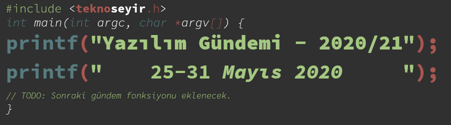
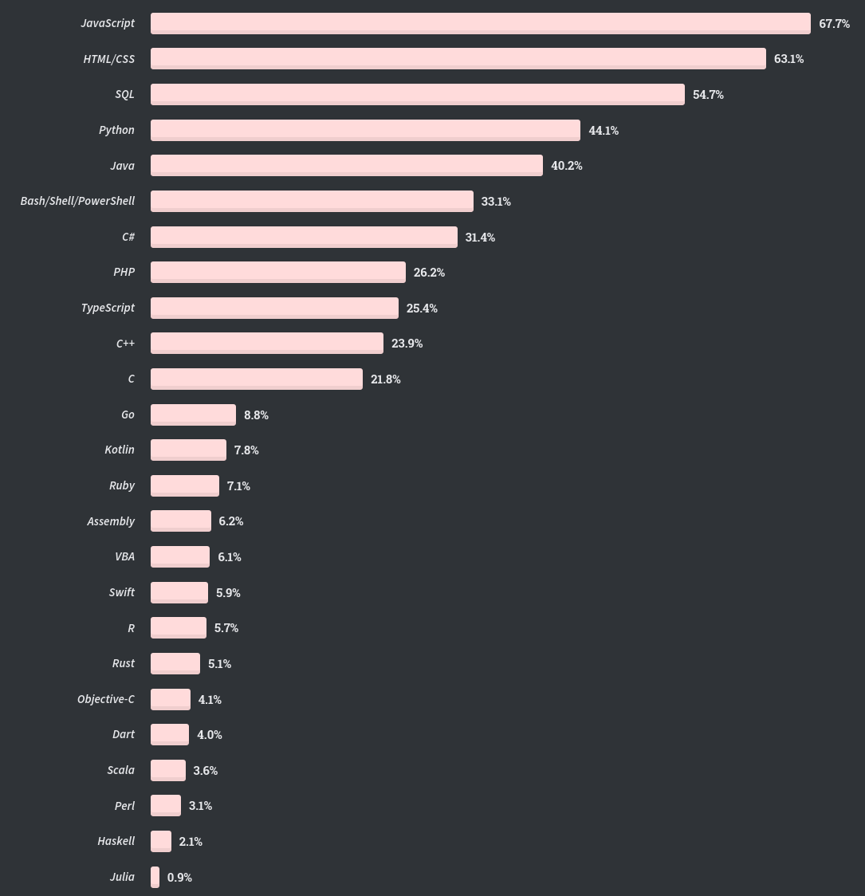
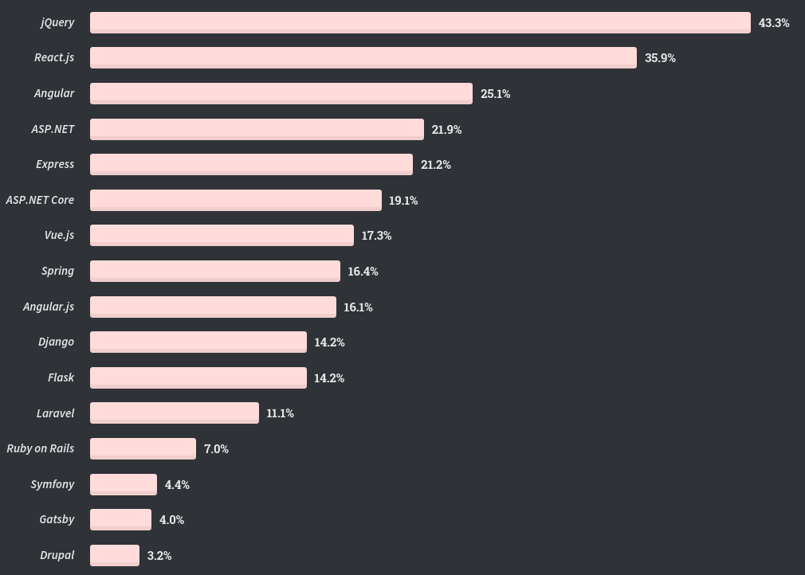
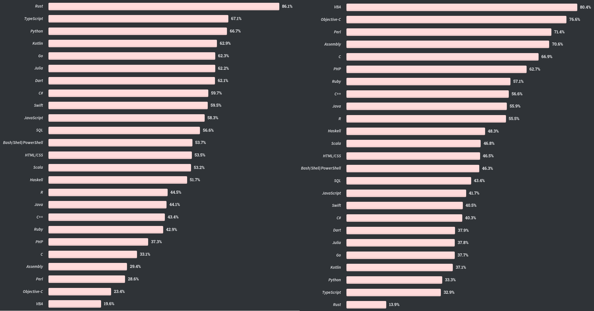
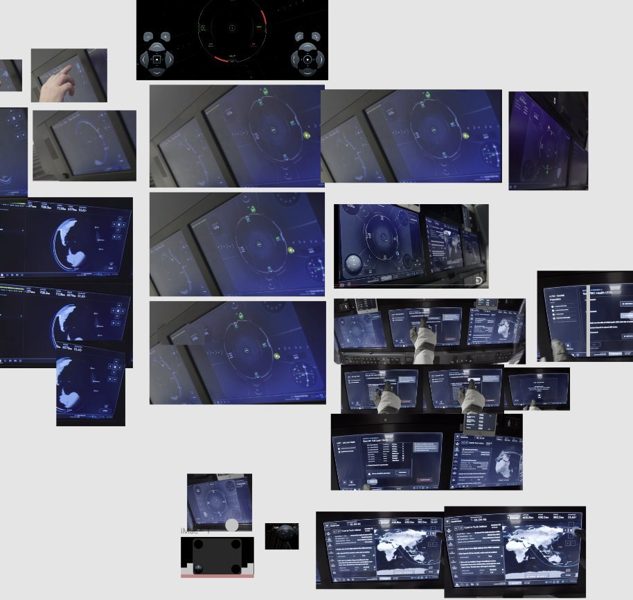
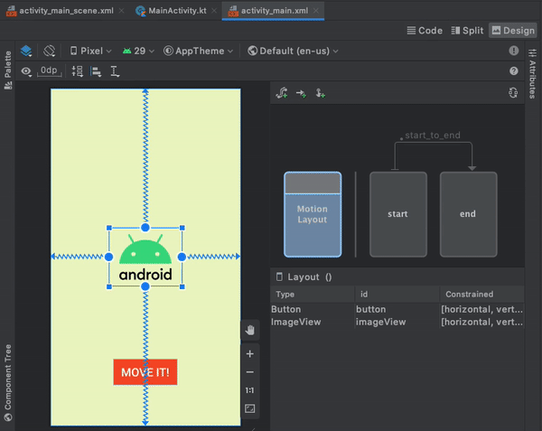
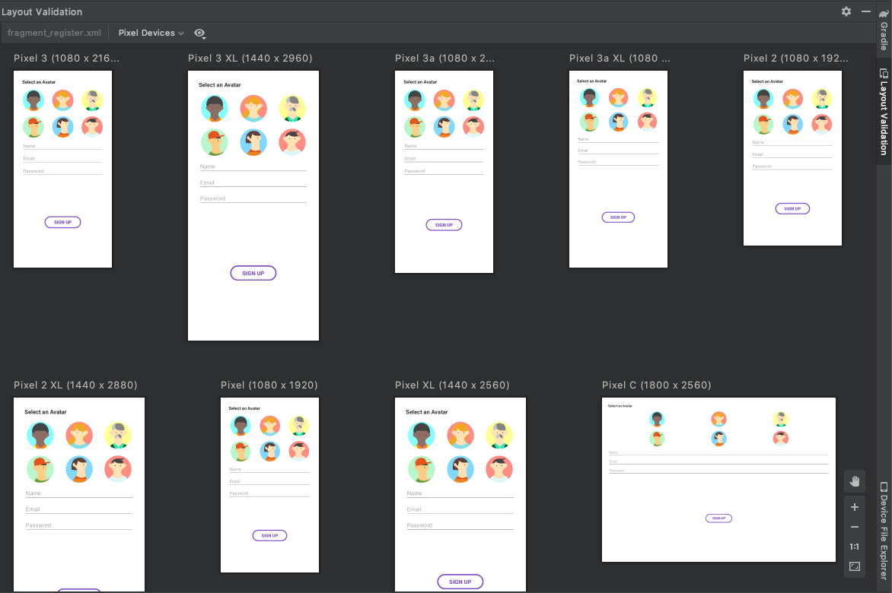
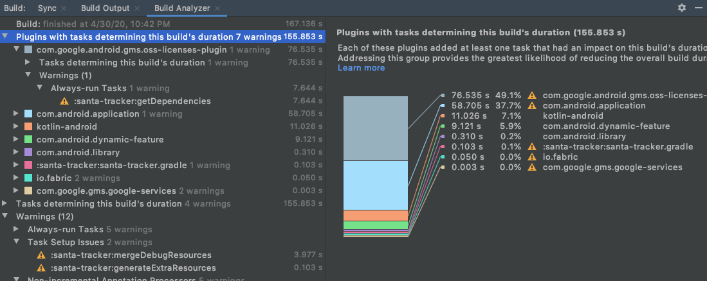

Yazılım Gündemi - 2020/21
25-31 Mayıs 2020
İçindekiler
- 1. StackOverflow Geliştirici Anketi 2020 sonuçları açıklandı
- 2. Microsoft'un paket yöneticisi WinGet, AppGet'den 'esinlenmiş'
- 3. SpaceX Dragon 2 kapsülünün uçuş arayüzü Chromium üzerinde JavaScript çalıştırıyormuş
- 4. Android Studio 4.0 sürümü yayınlandı
- 5. Google Chrome takımının nedensiz eklenti kaldırmalarının yeni kurbanı: Kozmos
- 6. Qt 5.15 LTS sürümü yayınlandı
- 7. Yaklaşan Online Etkinlikler
- 8. Diğer Haberler
- 9. Lisans

< Önceki Gündem | 25-31 Mayıs 2020 | Sonraki Gündem >
1 StackOverflow Geliştirici Anketi 2020 sonuçları açıklandı
StackOverflow sitesinin her yıl düzenli olarak yaptığı geliştirici anketi bu yılın Şubat ayında duyurulmuştu. Geçtiğimiz hafta içerisinde ise bu anketin sonuçları yayınlandı. Yaklaşık 65.000 kişinin katıldığı bu ankete Türkiye'den katılım oranı %1.22 çıkmış. Sektördeki en yaygın 3 rol ise tahmin edebileceğiniz üzere şunlar: Back-End Developer (%55.2), Full-Stack Developer (%54.9) ve Front-End Developer (%37.1). Ankete katılanların çoğunluğu ise %26.5 ile 25-29 yaş arası insanlar oluşturuyormuş. Teknolojilerle ilgili diğer sonuçlar ise şu şekilde:
1.1 En popüler programlama, betik ve işaretleme dilleri sıralaması

1.2 En popüler web framework'leri

1.3 En çok sevilen ve nefret edilen programlama dilleri

Şekil 4: (SOL): En çok sevilen programlama dilleri.
(SAĞ): En çok nefret edilen programlama dilleri
Bu tarz konuları değerlendirirken sürekli söylediğim bir şeyi yine tekrarlamak isterim: Teknoloji tercihlerinizi bu anketlerin sonuçlarına göre değil kendi ihtiyaçlarınıza göre yapın. Bu veriler sadece geliştirici ekosisteminin büyük resmini görmeye yarıyor.
Anketin tüm sonuçlarını buraya eklemek mümkün olmadığı için sadece bu başlıkları aldım ben ama diğer sonuçlar da oldukça ilgi çekici. StackOverflow da zaten sonuçlar için çok güzel bir sayfa hazırlamış. Konu başlığına eklediğim bağlantıya tıklayarak diğer anket sonuçlarını inceleyebilirsiniz.
2 Microsoft'un paket yöneticisi WinGet, AppGet'den 'esinlenmiş'
Bir önceki yazılım gündemi yazısında (bkz: Yazılım Gündemi - 2020/20) sizlere Microsoft'un Build 2020 etkinliğinde duyurduğu paket yöneticisi WinGet'den bahsetmiştim. Yine aynı hafta içerisinde AppGet isimli farklı bir paket yöneticisinin de geliştiricisi tarafından artık devam ettirilmeyeceği duyurulmuştu fakat bunu gündeme eklememiştim (İtiraf etmek gerekirse geliştiricinin yayınladığı yazıyı okumadığım için konuyu farklı bir şey sanmıştım). Bu hafta The Verge sitesinde yayınlanan haber ve Microsoft'un ilgili takımının yöneticisinin yayınladığı yazıyla birlikte konu daha fazla gündeme geldi.
AppGet'in geliştiricisi Keivan Beigi, geçtiğimiz hafta bir blog yazısıyla AppGet'i artık geliştirmeyeceğini, 1 Ağustostan itibaren de kapatacağını duyurdu. Bu hareketinin nedenini ise şöyle açıkladı: "Microsoft WinGet'i geliştirirken benimle iş görüşmesi yaptı, ben onlara AppGet'in arka planından ve teknik kısımlarından bahsedip, gelecekle ilgili fikirlerimi aktardım fakat sonrasında bana hiç geri dönüş yapmadılar. Geçtiğimiz hafta duyurulan WinGet'i görünce çok oldum. Microsoft'la rekabet edemem ve topluluğu da bölmek istemiyorum. O yüzden AppGet'i artık geliştirmeyeceğim". Üstelik WinGet'in duyuru yazısının hiçbir yerinde de bu geliştiriciden ve emeğinden bahsedilmemiş.
Olayın Reddit ve HackerNews gibi platformlarda gündem olmasının ardından olaya konu olan Microsoft takımının yöneticisi açıklama yapmak zorunda kaldı ve yaptıklarını bir nevi kabul edip, AppGet'deki şu şeylerden esinlendik gibi bir yazı yazıp Keivan Beigi'ye teşekkür etmiş. "Geç gelen adalet, adalet değildir" atasözünü şu şekilde değiştirirsek konuya çok uyumlu oluyor: "Geç gelen teşekkür, teşekkür değildir".
Geçmişteki Microsoft davranışlarının terk edilip, açık kaynağa yaklaşmalarının ardından böyle bir haberle gündeme gelmeleri hiç iyi olmadı. Açıkcası ben de Microsoft'un artık bakış açısını değiştirdiğini düşünüyordum fakat bu olay ve sonrasında yaşananlar bende hiç iyi bir intiba bırakmadı.
3 SpaceX Dragon 2 kapsülünün uçuş arayüzü Chromium üzerinde JavaScript çalıştırıyormuş
Geçtiğimiz hafta içerisinde 2011'den beri ilk defa Amerikan topraklarından astronot gönderildi. Bu görevin diğerlerinden farklı ve özel bir yanı daha var: Tarihte ilk kez özel bir şirket uzaya insan gönderdi. Çoğumuz zaten NASA ve SpaceX tarafından yapılan canlı yayını izlemiştir. İşte bu yayınlarda gördüğümüz SpaceX Dragon 2 kapsülünün dokunmatik uçuş arayüzü Chromium üzerinde çalışan bir arayüzüymüş. Bunu da 2015'yılında StackExchange sitesinde sorulmuş bir soruya verilmiş cevaptan öğreniyoruz. Cevabı yazan kişinin kaynağı ise Google Developer Conferance 2015 ve 2016'de SpaceX mühendisleri ile olan konuşmasıymış.

Şekil 5: SpaceX canlı yayınından alınmış, çeşitli açılardan Dragon 2 kapsülünün uçuş arayüzü görselleri
Bir kişinin bulup Reddit ve HackerNews gibi platformlarda paylaşması üzere konu üzerine bayağı bir espri yapıldı. SpaceX mühendisleri mutlaka JavaScript'in yol açabileceği şeylerin önüne geçecek önemleri almıştır tabii ki, zaten uzun yıllardır test edilen kapsül geçtiğimiz hafta sorunsuz bir şekile Uluslararası Uzak İstasyonuna kenetlendi ve astronotları sağlıklı şekilde taşıdı. Dragon 2 kapsülünün kenetlenme ekranının bir benzeri için şu adresdeki simülasyonu deneyebilirsiniz: https://iss-sim.spacex.com/ (arkaya da Interstellar filminin meşhur müziğini açarsanız daha eğlenceli oluyor :))
İlgili StackOverflow cevabından öğrendiğimiz diğer bilgiler ise Falcon 9 roketi hakkında. Falcon 9 roketinin C/C++ dilleri kullanılarak oluşturulmuş yazılımı kendilerine göre özelleştirdikleri Linux çekirdeği üzerinde 3 farklı işlemcide çalışıyormuş ve sonuçlar karşılaştırılıp uyumsuzluk durumlarında işleme alınmıyormuş.
Ayrıca benim de bu hafta keşfettiğim SpaceX API'sini de sizlerle paylaşmak isterim. Bu hafta içerisinde Dragon kapsülleri için de birçok end-point kullanıma sunulmuş: https://docs.spacexdata.com/.
4 Android Studio 4.0 sürümü yayınlandı
IntelliJ IDEA temelli, Google tarafından geliştirilen Android Studio IDE'sinin geçtiğimiz hafta içerisinde 4.0 numaralı sürümü stable etiketiyle birlikte yayınlandı. Bu sürümle birlikte gelen birkaç özelliği birlikte inceleyelim:
4.1 Motion Editor

Android işletim sisteminin 4.0 sürümünden beri desteklenen MonitonLayout
API'si sayesinde objelere animasyon kazandırabiliyorduk zaten ama artık
Android Studio 4.0 ile bu daha kolay bir hale geldi. Özel editör sayesinde
artık XML dosyalarıyla boğuşmadan grafik arayüzünü kullanarak animasyonlar
yaratabileceğiz. İsterseniz yine XML görünümüze geçebiliyorsunuz tabii.
4.2 Layout Validation
Android sistemler için uygulama geliştirirken tek bir cihaz olmamasından dolayı birçok farklı ekran boyutu için tasarımınızı ayarlamanız gerekiyor (web tarafındaki responsive tasarım gibi). Artık Android Studio 4.0 ile birlikte her cihaz için farklı emülatör çalıştırmak yerine Layout Validation sekmesini kullanarak tasarımınızın farklı ekran boyutlarında nasıl gözüleceğini görebiliyorsunuz.

4.3 Build Analyzer
Geliştirdiğiniz uygulamaları derlerken bazen derleme süreleri acayip uzayabiliyor fakat bunun hangi eklenti ya da kütüphaneden kaynaklandığını bulmak biraz zordu. Bu sürümle birlikte gelen Build Analyzer ile artık uzun süren build işlemlerinde sorunlu olan eklenti ya da kütüphaneleri kolaylıkla tespit edebileceksiniz.

Android Studio'nun bu sürümüyle birlikte gelen diğer özellikler ve değişiklikler için konu başlığına eklediğim bağlantıya tıklayabilir ya da Android Developers kanalında yayınlanan şu videoyu izleyebilirsiniz.
5 Google Chrome takımının nedensiz eklenti kaldırmalarının yeni kurbanı: Kozmos
2016 yılındaki left-pad olayıyla tanıdığımız Azer Koçulu, npm'den sonra bu
sefer de Google Chrome Eklenti Takımı'ndan haksızlık gördü. left-pad olayını
hatırlamayanlar için Azer Koçulu'nun kendi sitesinde yazdığı şu yazıya göz
atabilirler (alternatif Türkçe kaynak) ya da kendisinin konuk olduğu şu
podcast yayınına göz atabilirler. Bugünkü konumuz 2017'den beri geliştirmekte
olduğu ücretli Chrome eklentisi olan Kozmos.
Kısaca Kozmos, tamamen çevrimdışı çalışma imkanı sunan bir çeşit yerimi depolama çözümüydü. İnternet bağlantınız yokken bilgilerinizi tarayıcının içinde depolayan, internete bağlandığınızda ise her yerden erişebilmeniz için onları kendi sunucularına gönderen bir yeni sekme sayfası eklentisiydi. Azer Koçulu böyle bir girişimde bulunmuş fakat pek beklediği yatırımlara ulaşamamış olsa da projeyi pasif gelir olarak sürdürmeye devam etmiş. Hiçbir kullanıcı verisini satmamış, tamamen Google'ın Eklenti Marketi Kurallarına uygun şekilde geliştirmesini yapmış.
Son 2 yıldır ise tabiri caizse Google'ın Chrome eklenti takımı Azer'in başına musallat olmuş. Birkaç haftada bir eklentisini marketten kaldıran otomatik botlar ile arasında şöyle bir diyalog geçirdikten sonra insan çalışanlar durumu düzeltiyormuş (basit özet şeklinde):
- Google (Bot): Eklentini marketten kaldıracağız.
- Azer Koçulu: Bu bir yanlışlık olmalı.
- Google (Bot): Yanlışlıklık yok, kuralları gözden geçir, senin eklentin kurallardan birini ihlal ediyor.
- Azer Koçulu: Hiçbirini ihlal etmiyor, bu bir yanlışlık!
- Google (sonunda insan): Özür dileriz, yanlışlık oldu.
ve bu tarz konuşmalar sürekli tekrarlandığı halde doğru düzgün bir çözüm sunulmamış. En sonunda da birkaç ay önce Google'ın Chrome eklenti takımı Kozmos'u hiçbir uyarı ya da bilgi vermeden Kozmos'u marketten kaldırmışlar. Üstelik iletişim kurup durum hakkında bilgi alınabilecek bir destek sistemi bile yokmuş.
Üzerine planlar yaptığınız, az da olsa gelir elde ettiğiniz bir projeniz işte böyle rahat bir şekilde Google tarafından fişi çekilebiliyor. Bu yazı geçen hafta yayınlanmış olmasına rağmen bu haftanın gündemine almamın sebeplerinden biri de Google'ın bu yüzünü sizlere tekrar göstermek istemem. Üstelik bu olaylar Google'ın elinde tuttuğu tüm uygulama marketlerinde (özellikle Android Play Store üzerinde)sürekli tekrarlanıyor. Google'a güvenerek yola çıkacak olanlar bir kez daha düşünsün.
Bu konu hakkında siz ne düşünüyorsunuz? Yorumlar bölümünde konuşalım.
6 Qt 5.15 LTS sürümü yayınlandı
C++ ile platformlar arası (cross-platform) uygulama geliştirmeye yarayan kütüphane Qt, geçtiğimiz hafta içerisinde 5.15 sürümünü Uzun-dönem desteği (Long-term Support) etiketiyle yayınladı. Bu yılın başında duyurdukları (bkz: Yazılım Gündemi - 2020/05) gibi LTS etiketli sürümler artık sadece kurumsal lisansı olan müşterilerine sunuluyor. Önümüzdeki 3 yıllık periyotda destek almaya devam edecek olan 5.15 sürümüyle birlikte gelen bazı yenilikler ise şu şekilde:
- 3 boyutlu grafik API'lerinin soyutlanması: Farklı işletim sistemlerinde çalışan farklı grafik kütüphanelerinin yaygınlaşmasıyla birlikte Qt de, cross-platform sözünü tutabilmek için artık sadece OpenGL kullanmayacak. Onun yerine bu katmanı soyutlayarak (abstracting), Metal, Vulkan ve Direct 3D 12 gibi farklı grafik kütüphaneleriyle de çalışılabilmesini mümkün kılan Qt Rendering Hardware Interface (RHI) sistemini getiriyor.
- Qt Quick 3D: Qt tabanlı uygulamalarda 3 boyutlu içerikleri kullanmayı kolaylaştıracak bir araç için tam destek geldi. Benchmark Demosu için şu YouTube videosunu izleyebilirsiniz.
- Qt Design Studio 1.5: Bu araca da 3 boyutlu çalışmalar için özellikler eklenmiş.
- Yeni QML özellikleri
- Qt Lottie için tam destek.
- Qt WebEngine artık Chromium 80 kullanıyor.
- Qt Network artk TLS 1.3 destekliyor.
Bu sürümle birlikte gelen diğer özellikler ve değişiklikler için konu başlığına eklediğim bağlantıya tıklayabilir ya da 4 Haziran günü gerçekleştirilecek olan şu webiner etkinliğine kayıt olabilirsiniz: Qt 5.15 LTS: Built to Last.
Qt ile ilgili diğer haberler:
- Qt Online Installer 3.2.3 yayınlandı.
- Qt 5.15 ile birlikte gelen Android için Qt yenilikleri.
7 Yaklaşan Online Etkinlikler
| Etkinlik İsmi | Tarihi |
|---|---|
| Python'u Yeniden Keşfetmek: Django Framework ile RESTful API Geliştirme | 1 Haziran 20:00 |
| Açık Seminer 26. Gün: Microservice Monoliths vs Microservices 12 Factor Apps | 2 Haziran 14:00 |
| Açık Seminer 27. Gün: Differences Between OpenShift & Kubernetes | 3 Haziran 14:00 |
| Açık Seminer 28. Gün: DevOps Modernizasyonu | 4 Haziran 14:00 |
| Açık Seminer 29. Gün: DevOps ve Sanallaştırma Teknolojileri Örnekleri | 5 Haziran 14:00 |
| Açık Seminer 30. Gün: Veri Analizi Süreçlerinde TRT'deki DevOps Kültürü | 6 Haziran 14:00 |
| Kubernetes Hands-On no.5: RBAC and Secret Management | 7 Haziran 13:30 |
8 Diğer Haberler
- Hindistan kendi koronavirüs takip uygulamasını açık kaynak yaptı. GitHub
Deposu
- Hindistan koronavirüs uygulamasında hata bulana ödül vereceğini açıkladı.
- Açık kaynak yapılan uygulamanın marketteki uygulama ile aynı olmadığına dair iddialar mevcut.
- Fransa StopCovid uygulamasının bütün platformlardaki uygulamalarını açık kaynak yaptı.
- Google, Amerika'daki protestolar nedeniyle Android 11 Beta sürümünü yayınlamayı erteledi. Duyuru Tweet'i
- Docker ve Microsoft iş birliklerini genişleteceklerini duyurdular.
- Özgür Yazılım Vakfı (FSF) tüm Jitsi Meet ile tüm üyelerine ücretsiz video konferans hizmeti sağlamaya başlamadı.
- TechEmpower firması, Framework Benchmarks Round 19 sonuçlarını yayınladı.
- Node.js v12.17.0 LTS sürümü yayınlandı.
- Symfony birçok dalda yeni sürüm yayınladı:
- OpenSSH 8.3 sürümü yayınlandı. Artık SHA-1 desteklenmiyor.
- Swift takımı sunucu ekosistemi için yeni açık kaynak projesini tanıttı: Swift AWS Lambda Runtime.
- Visual Studio Code artık ARM64 platformunu destekliyor.
- Visual Studio Code için Zeplin eklentisi tanıtıldı.
- Sublime Merge 2 sürümü yayınlandı.
- Yeni bir fonksiyonel programlama dili Alpha sürümüyle duyuruldu: Yatta. GitHub Deposu
- Yeni bir platformlar arası (cross-platform) açık kaynak C++ framework'ü duyuruldu: Plywood. GitHub Deposu
- Upbound Cloud Community Preview tanıtıldı.
- Snowpack 2.0 sürümü yayınlandı.
- immudb v0.6.0 sürümü yayınlandı.
- go-micro v2.8.0 sürümü yayınlandı.
- TiDB v4.0.0 sürümü yayınlandı.
- Astree v1.22 sürümü yayınlandı.
9 Lisans

Yazılım Gündemi - 2020/21 yazısı Eren Hatırnaz tarafından Creative Commons Atıf-GayriTicari-AynıLisanslaPaylaş 4.0 Uluslararası Lisansı (CC BY-NC-SA 4.0) ile lisanslanmıştır.